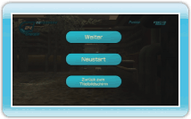

Die Punktzahl, die du bisher durch das Abschießen von Dosen erhalten hast.
ENERGIE
Die Dosenenergie, die in deiner Recycling-Strahlenkanone gespeichert ist. Ein Block der Leiste entspricht 100 Einheiten Dosenenergie.
Punktzahl
Punkte, die du für das Abschießen einer einzelnen Dose erhalten hast.
Dosenenergie
Energie, die du aufsaugen und in der Recycling-Strahlenkanone speichern kannst.
Combo
Anzahl der nacheinander erzielten Treffer ohne Fehlschuss.
Zeit
Die verbleibende Zeit während eines Endgegnerkampfs, die beim Beenden einer Stage in Bonuspunkte umgerechnet wird.
Pause-Menü
Drücke während einer Stage , um das Pause-Menü anzuzeigen. Zeige auf eine der Optionen und wähle sie mit oder aus. Drücke , um das Pause-Menü zu schließen und die Stage weiterzuspielen.
WEITER
Die aktuelle Stage fortsetzen.
NEUSTART
Die aktuelle Stage noch einmal vom Anfang beginnen bzw. im Herausforderungsmodus vom Anfang der ersten Stage beginnen.

 , um das Pause-Menü anzuzeigen. Zeige auf eine der Optionen und wähle sie mit
, um das Pause-Menü anzuzeigen. Zeige auf eine der Optionen und wähle sie mit  oder
oder  aus. Drücke
aus. Drücke